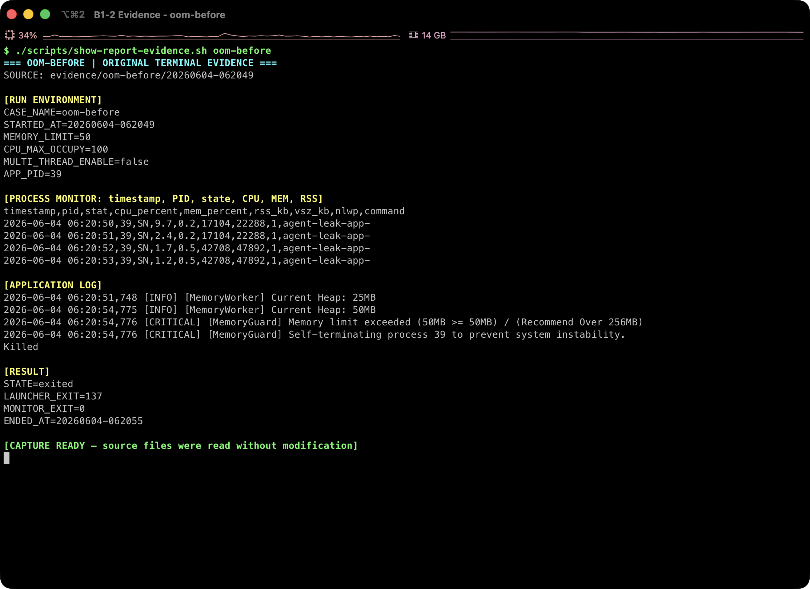
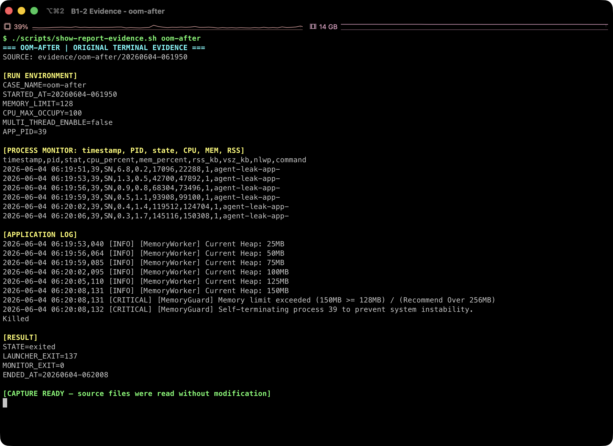
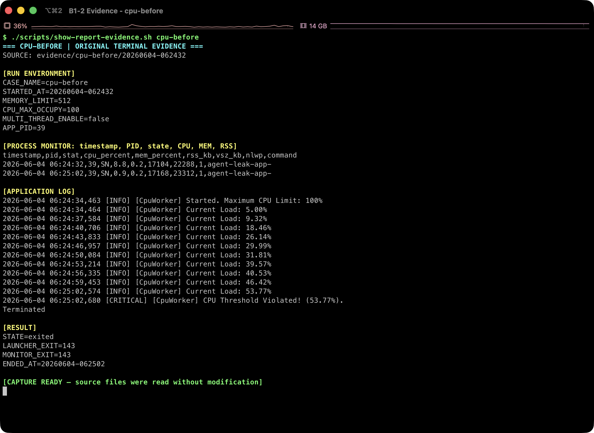
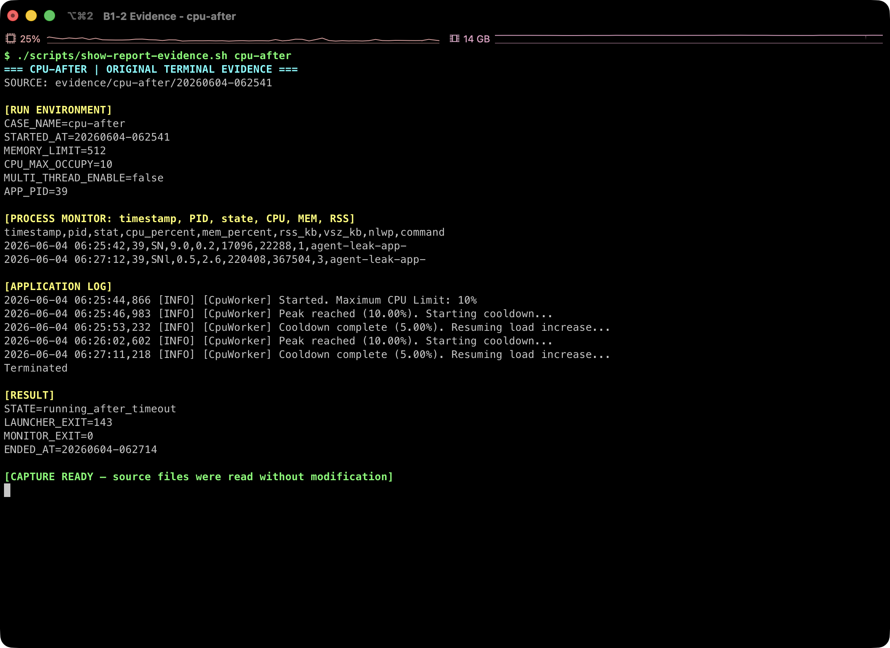
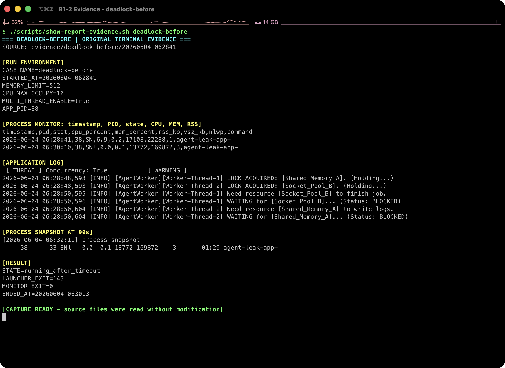
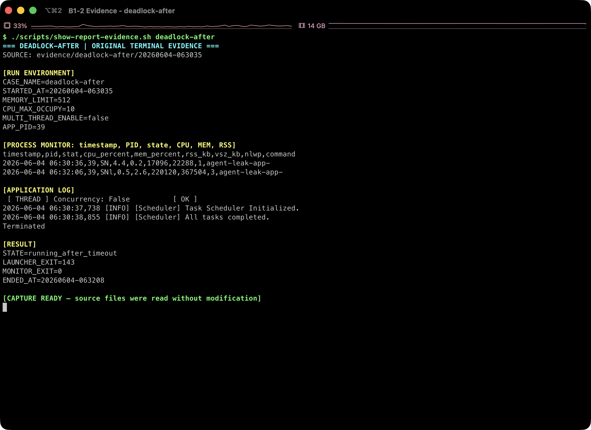

OOM, CPU 지연, 데드락 실험을 하나의 운영 관점으로 통합하고, 스케줄링 추론과 개선 우선순위를 정리했다.
reports/ 내 Markdown 문서 6개ps, top, RSS/프로세스 스냅샷의 Before/After 비교세 장애 모두 설정 변경으로 증상을 늦추거나 우회할 수 있었지만, 근본 원인은 제거되지 않았다. OOM과 CPU 장애는 보호 로직이 프로세스를 종료해 재시작 가능성이 남는 반면, 데드락은 PID와 포트를 유지한 채 진행만 멈춰 단순 liveness 검사로 놓칠 수 있다.
MEMORY_LIMIT 상향은 생존 시간을 약 5.1초에서 17.1초로 늘렸을 뿐 150MB에서 다시 MemoryGuard 종료가 발생했다.CPU_MAX_OCCUPY=100에서 앱 내부 부하가 53.77%에 도달해 종료됐다. 10%로 낮추면 5-10% cooldown 사이클로 전환되어 90초 관찰 동안 생존했다.우선 결론: P0는 진행 상태 기반 readiness/heartbeat와 전역 락 순서 강제다. 그 다음 메모리 증가율 및 time-to-limit 감시, bounded collection/queue, CPU throttling과 워커 상한을 적용해야 한다.
| 장애 | Before 관측 | 설정 변경 후 | 판정 | 근본 해결 방향 |
|---|---|---|---|---|
| HIGH OOM |
Heap 25 -> 50MB, 최대 RSS 42,708KB, 약 5.1초 후 자체 종료 | 제한 128MB에서 최대 RSS 145,116KB, 약 17.1초 후 다시 자체 종료 | 제한 상향은 장애 지연 | 보유 객체/버퍼 수명 수정, 상한/TTL/LRU, heap profile |
| HIGH CPU |
앱 내부 부하 53.77%, 약 30초 후 임계치 위반 종료 | 5-10% cooldown 반복, 90초 관찰 동안 생존 | 낮은 목표값은 유효한 완화책 | busy loop 제거, bounded worker/queue, cgroup quota |
| CRITICAL Deadlock |
PID 생존, CPU 0.0%, RSS 13,772KB 고정, 약 80초 무진행 | 멀티스레드 비활성화 후 All tasks completed |
회피는 가능하나 동시성 이점 상실 | 전역 락 순서, timeout/rollback, actor/message passing |
근거: 01-oom-crash.md, 02-cpu-latency.md, 03-deadlock.md, 04-scheduling-analysis.md, 05-evaluation-model-answers.md.
MEMORY_LIMIT을 50MB에서 128MB로 올리자 프로세스 생존 시간은 약 3.4배 늘었지만 Heap과 RSS의 지속 증가가 유지되어 다시 종료됐다. 관측된 종료 주체는 커널 OOM Killer가 아니라 애플리케이션 내부 MemoryGuard다.


Heap 로그가 25MB 단위로 증가하고 RSS도 같은 방향으로 상승한다. 따라서 단발성 스파이크보다 장기 보관 객체, 무제한 캐시/버퍼 또는 해제되지 않는 컬렉션에 가까운 패턴이다. 다만 소스 코드와 heap dump가 없으므로 구체적인 할당 지점은 확정할 수 없다.
memory.max로 호스트 장애 확산을 막는다.근거: 01-oom-crash.md의 Before/After 로그 및 표, 05-evaluation-model-answers.md의 질문 1-1, 1-2, 3-1, 4-1, 4-4.
CPU_MAX_OCCUPY=100에서는 앱 내부 부하가 53.77%까지 상승한 뒤 보호 임계치를 위반했다. 10%로 낮춘 실행은 10% 도달 시 cooldown, 5% 도달 시 재개를 반복하며 90초 관찰을 통과했다.
지표 해석 주의: 53.77%는 CpuWorker Current Load라는 앱 내부 부하 모델이고, ps/top %CPU와 동일한 측정값이 아니다. OS 관측 최대값은 8.8%였다. 장애 판정은 앱 로그의 임계치 위반과 종료 상태를 기준으로 한다.

CPU Threshold Violated로 종료됐다.
CPU 제한값을 낮추는 것은 즉시 적용 가능한 완화책이지만, 작업량을 줄이는 근본 수정은 아니다. 같은 호스트의 tail latency 보호를 위해서는 busy loop를 event/blocking wait로 바꾸고, 워커 수와 큐 처리량을 제한하며, 지속 초과일 때만 종료하도록 throttle -> graceful shutdown -> restart 순서를 설계해야 한다.
After 로그 끝의 Terminated는 Watchdog 장애 종료가 아니라 evidence runner가 90초 수집 후 보낸 종료 신호다. 이 구분을 하지 않으면 완화 실험을 실패로 잘못 분류할 수 있다.
근거: 02-cpu-latency.md의 로그/Before-After 표, 05-evaluation-model-answers.md의 질문 1-3, 1-4, 2-2, 3-2, 4-4.
Thread-1은 Shared_Memory_A를 보유한 채 Socket_Pool_B를 기다렸고, Thread-2는 반대로 B를 보유한 채 A를 기다렸다. 이후 약 80초 동안 PID는 존재했지만 CPU 0.0%, RSS 13,772KB, 추가 작업 로그 없음 상태가 유지됐다.
탐지 위험: 단순 PID/포트 liveness는 통과할 수 있다. 실제 작업 완료 시각, 큐 진척도, progress heartbeat를 검사하는 readiness가 필요하다.

WAITING ... BLOCKED 상태에서 멈췄다.
All tasks completed를 기록했다.| 조건 | 관측 근거 | 깨는 방법 |
|---|---|---|
| 상호 배제 | A와 B를 각각 한 스레드가 독점 | 공유 상태 축소 또는 단일 소유자 |
| 점유 대기 | 각 스레드가 한 락을 보유한 채 다른 락 대기 | 필요 락 일괄 획득, 실패 시 보유 락 해제 |
| 비선점 | 상대가 보유한 락을 강제로 회수하지 못함 | try_lock(timeout)과 rollback/backoff |
| 순환 대기 | Thread-1 -> B -> Thread-2 -> A -> Thread-1 | 모든 코드 경로에서 전역 락 순서 A -> B 강제 |
근거: 03-deadlock.md의 락 획득/대기 로그 및 스냅샷, 05-evaluation-model-answers.md의 질문 1-5, 1-6, 2-3, 3-3, 3-4, 4-2.
정상 로그에서 Thread-A, B, C가 같은 진행 단위로 번갈아 실행되고 40%, 80% 지점에서 선점된다. 관측 순서는 A -> B -> C -> A -> B -> C -> A -> B -> C다.
| 후보 | 예상 패턴 | 관측과의 일치 |
|---|---|---|
| FCFS | A 완료 후 B, 그 다음 C | 불일치. 각 작업이 완료 전 선점됨 |
| Priority | 특정 작업이 반복 우선되거나 더 많은 CPU slice 확보 | 근거 부족. 세 작업이 같은 진행 단위로 순환 |
| Round-Robin | 고정 순서와 유사한 time slice, 진행 상태 저장 후 다음 작업 전환 | 가장 높은 일치 |
40% 구간: A(20,40) -> B(20,40) -> C(20,40)
80% 구간: A(60,80) -> B(60,80) -> C(60,80)
완료 구간: A(100) -> B(100) -> C(100)장점: 작업 간 공정성이 높고 한 작업의 독점을 막아 웹/채팅/interactive agent처럼 응답성이 중요한 서비스에 적합하다.
한계: time slice가 짧으면 context switch 비용이 커지고, 길면 응답성이 떨어진다. 처리량 중심 배치에는 더 단순한 정책이 유리할 수 있다.
근거: 04-scheduling-analysis.md. 이 결론은 애플리케이션의 기록된 실행 순서에 대한 설명적 추론이며, 커널 수준 스케줄링 정책의 직접 측정 결과가 아니다.
분석은 제공 바이너리를 Docker에서 실행해 수집한 앱 로그, monitor.csv, ps, top, 프로세스/스레드 스냅샷에 한정된다. 바이너리 디컴파일이나 소스 코드 역분석은 수행하지 않았다.
| 용어/지표 | 보고서 내 의미 | 해석 주의 |
|---|---|---|
| Heap | 앱 MemoryWorker가 기록한 내부 메모리 값 | RSS와 동일한 측정값이 아님 |
| RSS | 프로세스가 실제 물리 메모리에 상주시킨 양(KB) | 공유 페이지와 측정 시점 영향을 받음 |
| VSZ | 프로세스의 가상 주소 공간(KB) | 실제 물리 메모리 사용량으로 해석하면 안 됨 |
| CpuWorker Load | 앱이 계산한 내부 부하 모델 | ps/top %CPU와 직접 비교 불가 |
| liveness | PID/포트가 살아 있는지 | 데드락 상태도 통과할 수 있음 |
| readiness/progress | 실제 작업이 계속 완료되는지 | 데드락 탐지에 더 적합 |
| 케이스 | Before | After | 주요 판정 기준 |
|---|---|---|---|
| OOM | MEMORY_LIMIT=50 | MEMORY_LIMIT=128 | Heap/RSS 증가, 종료 로그, 생존 시간 |
| CPU | CPU_MAX_OCCUPY=100 | CPU_MAX_OCCUPY=10 | 앱 내부 부하, cooldown, 90초 생존 |
| Deadlock | MULTI_THREAD_ENABLE=true | MULTI_THREAD_ENABLE=false | 락 대기 순서, progress 정지, PID/자원 상태 |
환경/증거 범위: README.md. 세부 판정 기준: 01-03 장애 보고서와 05-evaluation-model-answers.md.
monitor.csv 샘플을 대조해 종료 또는 무진행 구간을 확인했다.kill -0, ps -p, top -b -n 1 -p PID, ps -L로 프로세스/스레드 상태를 교차 확인했다.| 한계 | 영향 | 보강 방법 |
|---|---|---|
| 각 조건의 반복 실행 수가 제시되지 않음 | 재현 확률과 분산을 정량화할 수 없음 | 조건별 최소 3회 반복, 성공률/시간 분포 기록 |
| 소스 코드와 heap/thread dump 부재 | 구체적인 allocation/lock 위치 확정 불가 | heap profile, allocation stack, thread dump, lock graph 수집 |
| 짧은 관찰 구간 | 장기 steady state와 희귀 경쟁 조건 평가 제한 | 장시간 soak/stress/fault-injection 테스트 |
| 앱 내부 CPU 지표 정의 미공개 | 53.77%의 물리적 의미를 OS 사용률로 환산 불가 | 계산식/샘플링 주기 공개, cgroup 지표와 동시 기록 |
| Round-Robin은 로그 기반 추론 | 실제 커널 스케줄러 정책으로 일반화 불가 | 스케줄러 구현 또는 trace 기반 검증 |
주장 수준: OOM, CPU 종료, 데드락 상태는 제공 로그와 프로세스 관측으로 직접 확인한 기술적 진단이다. 누수의 정확한 코드 위치, 내부 CPU 부하 산식, 커널 스케줄러 정책은 추가 증거가 필요한 미확정 영역이다.
근거: README.md의 분석 범위, 05-evaluation-model-answers.md의 명령어 흐름 및 “미션을 다시 한다면” 항목.
try_lock(timeout) 실패 시 보유 락을 해제한 뒤 backoff한다. 가능하면 actor/message queue로 공유 상태를 단일 소유화한다.memory.current/events/max를 수집한다.ps -L, 짧은 thread dump를 보존한다.근거: 05-evaluation-model-answers.md의 질문 4-1 - 4-5와 세 장애 보고서의 Workaround & Verification.
CpuWorker Current Load의 계산식, 샘플링 주기, 보호 임계치가 실제 cgroup CPU 소비와 어떻게 연결되는가?완료 기준: 설정값을 바꿨을 때가 아니라, 누수 없이 RSS가 안정화되고, CPU가 quota 내에서 지속 처리되며, 멀티스레드 경로에서도 반복 스트레스 테스트 동안 lock-order 위반과 progress 정지가 없을 때 근본 해결로 판정한다.
| 문서 | 보고서 내 역할 |
|---|---|
README.md | 환경, 증거 세트, 분석 범위 |
01-oom-crash.md | OOM 사실, 로그, Before/After, 조치 |
02-cpu-latency.md | CPU 사실, 내부/OS 지표, Before/After, 조치 |
03-deadlock.md | 락 대기 그래프, 무진행 증거, Before/After, 조치 |
04-scheduling-analysis.md | Round-Robin 추론과 장단점 |
05-evaluation-model-answers.md | 지표 해석, 진단 명령, 운영 원리, 개선 우선순위, 한계 보강 |